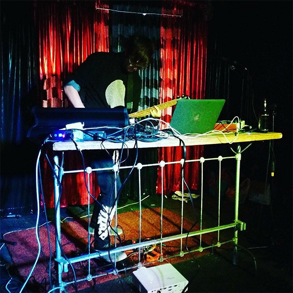

<!DOCTYPE html>
<html lang="en-US">

<head>
	<title>Avery</title>
	<meta name="viewport" content="width=device-width, initial-scale=1.0">
	<meta name="description" content="Avery's Portfolio">
	<link rel="shortcut icon" href="/AveryBickLogo.jpg" id="favicon">
	<link href="./css/style.css" rel="stylesheet" type="text/css"/>
	<link rel="stylesheet" href="https://fonts.googleapis.com/css?family=Didact+Gothic">
    <meta name="og:image" itemprop="image primaryImageOfPage" content="/AveryBickLogo.jpg">

	<style type="text/css">
	a:link {color:#50afe5;}    /* normal link */
	a:visited {color:#166592;} /* visited link */
	a:hover {color:#004E99;}   /* mouse over link */
	a:active {color:#fe0000}   /* selected link */
	</style>

</head>

</html>

<body>
	<div class="section" id="bio">
	<h1>About</h1>
		<div class ="row" style="float: left; width: 50%">
				
					
							
					
		</div>
		<p>
		I'm a recent Stanford graduate with an M.S. in Environmental Engineering at Stanford. I founded a startup HighTide Intellience with two of my former students in the Future Bay Initiative which is creating actionable sea level rise analyses. I also currently work with Professor Gabrielle Hecht in the Stanford History Department where I'm supporting her research on mining waste during the Anthropocene.

		<br>
		<br>

		I'm also an audiovisual artist. Under the moniker Slow Proteo I've played shows across the U.S. and Mexico. I've performed at with Stanford Laptop Orchestra at Stanford's Bing Concert Hall and exhibited art with Stanford ArtX. I also organize large shows and run sound and visuals with my housemates in Santa Cruz, California.

		<br>
		<br>

		<h2>Contact</h2>
		<p>Business: avery@hightide.ai</p>
		<br>
		<p>Audiovisual: slowproteo@gmail.com</p>
		<br>
		<br>		
		<a href="https://www.instagram.com/slowproteo/">Instagram</a>
		<br>
		<a href="https://www.linkedin.com/in/ian-avery-bick/">LinkedIn</a>


	</div>

<div class="section bottom-menu"><hr/>
	<p>
		<a href="./index.html">home</a>
		<a href="./about.html">about</a>
		<a href="./environmental.html">environmental</a>
		<a href="./audiovisual.html">audiovisual</a>
	</p><
</div>

</body>